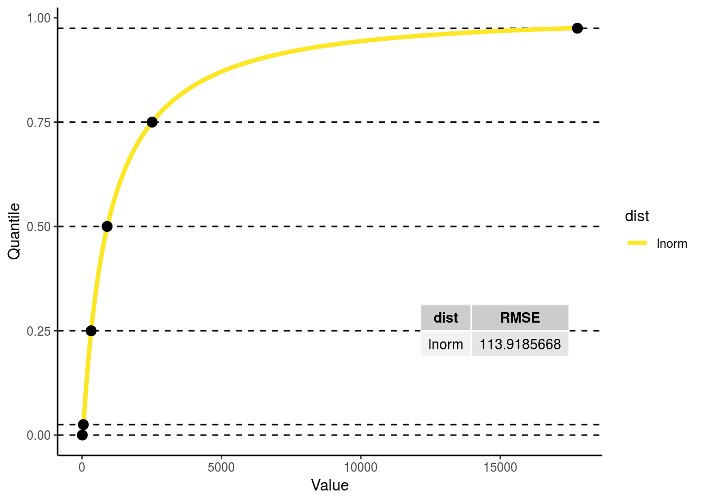

Key Wood Traits
[wood_psi_osmotic]: Sapwood osmotic water potential at saturation
ED
- ED variable name :
wood_psi_osmotic - ED variable units:
m
BETY
- Variable id:
1000000298 - Prior id:
1000000410
NOTE!! The units are NEGATIVE in the database so we can calculate a distribution that is entirely negative.
Calculation
Expert elicitation
Expert elicitation provided by Brad Christoffersen
- FATES varaiable name:
pinot_node (stem) - FATES variable units:
m
Conversion
MPa to m
Code
i <- which(priors$ED_name == "wood_psi_osmotic")
prior_in <- priors[i, stats] * MPa2m
myfit <- prior_get_fit(prior_in, accepted_dists, plot = TRUE)
myfit$score$dist[which.min(myfit$score$RMSE)]## [1] "weibull"variable_id.in <- tbl(bety,"variables") %>% filter(name == priors$ED_name[i]) %>% pull(id)
phylogeny.in <- "plants"
best.fit.name <- myfit$score$dist[which.min(myfit$score$RMSE)]
best.fit.dat <- myfit$dists %>% select(one_of("Name", best.fit.name)) %>% rename(value := !!best.fit.name, params = Name)
wood_psi_osmotic_prior_id <- prior_input(bety, variable_id.in, phylogeny.in,
dist.name.in = best.fit.name,
parama.in = best.fit.dat %>% filter(params == "Para1") %>% pull(value),
paramb.in = best.fit.dat %>% filter(params == "Para2") %>% pull(value),
paramc.in = best.fit.dat %>% filter(params == "Para3") %>% pull(value))## [1] "Entry with id = 1000000410 already exists. Parameters look the same. Old: weibull(2.4100, 237.4600) New: weibull(2.4100, 237.4600)"wood_psi_osmotic_fit <- tbl(bety, "priors") %>% filter(id == wood_psi_osmotic_prior_id) %>% collect()
wood_psi_osmotic_prior <- -rdistn(wood_psi_osmotic_fit)
wood_psi_osmotic_default <- get_ED_default(PFT3_defaults_history, "wood_psi_osmotic")
prior_plot(prior = wood_psi_osmotic_prior,
q = c(0,1),
plot_default = wood_psi_osmotic_default,
title = sprintf("Sapwood osmotic water potential at saturation (wood_psi_osmotic): %s", wood_psi_osmotic_fit$distn),
type = "elic")
[wood_elastic_mod]: Sapwood bulk elastic modulus
ED
- ED variable name :
wood_elastic_mod - ED variable units:
MPaNote! This is the only case in which MPa is used instead of m!
BETY
- Variable id:
1000000303 - Prior id:
1000000394
Calculation
Expert elicitation
Expert elicitation provided by Brad Christoffersen
- FATES varaiable name:
epsil_node (stem) - FATES variable units:
MPa
Conversion
None!
Code
i <- which(priors$ED_name == "wood_elastic_mod")
prior_in <- priors[i,]
myfit <- prior_get_fit(prior_in, accepted_dists, plot = TRUE)
variable_id.in <- tbl(bety,"variables") %>% filter(name == priors$ED_name[i]) %>% pull(id)
phylogeny.in <- "plants"
best.fit.name <- myfit$score$dist[which.min(myfit$score$RMSE)]
best.fit.dat <- myfit$dists %>% select(one_of("Name", best.fit.name)) %>% rename(value := !!best.fit.name, params = Name)
wood_elastic_mod_id <- prior_input(bety, variable_id.in, phylogeny.in,
dist.name.in = best.fit.name,
parama.in = best.fit.dat %>% filter(params == "Para1") %>% pull(value),
paramb.in = best.fit.dat %>% filter(params == "Para2") %>% pull(value),
paramc.in = best.fit.dat %>% filter(params == "Para3") %>% pull(value))## [1] "Entry with id = 1000000394 already exists. Parameters look the same. Old: gamma(3.4400, 0.1600) New: gamma(3.4400, 0.1600)"wood_elastic_mod_fit <- tbl(bety, "priors") %>% filter(id == wood_elastic_mod_id) %>% collect()
wood_elastic_mod_prior <- rdistn(wood_elastic_mod_fit)
wood_elastic_mod_default <- get_ED_default("/fs/data3/ecowdery/ED.Hydro/parameters/pft3_defaults_history.xml", "wood_elastic_mod")
prior_plot(prior = wood_elastic_mod_prior,
q = c(0,1),
plot_default = wood_elastic_mod_default,
title = sprintf("wood bulk elastic modulus (wood_elastic_mod): %s", wood_elastic_mod_fit$distn),
type = "elic")
[wood_water_sat]: Sapwood water content at saturation
ED
- ED variable name:
wood_water_sat - ED variable units:
kg H2O/kg biomass
BETY
- Variable id: ``
- Prior id: ``
Calculation
Expert elicitation
Expert elicitation provided by Brad Christoffersen
- FATES variable name:
thetas_node (stem) - FATES variable units:
kg kg-1
Conversion
multiply by the density of water over wood density
Code
i <- which(priors$ED_name == "wood_water_sat")
myfit_0 <- prior_get_fit(priors[i,], accepted_dists, plot = FALSE)
myfit_0$score$dist[which.min(myfit_0$score$RMSE)]## [1] "norm"# I'm skipping steps here for the sake of time and sanity
# Normal is the best fit
wood_water_sat_prior_0 <- rnorm(100000, myfit_0$dists$norm[1], myfit_0$dists$norm[2])
wood_water_sat_sample <- wood_water_sat_prior_0 * (wdns/(wood_density_prior * 1e3))
# Note that here we have to multiply by 1e3 because of the units of wood density
# In this case I'm not using the function I built because here it wouldn't make sense.
prior_in <- data.frame(low.025 = quantile(wood_water_sat_sample, c(.025), na.rm = TRUE),
low.25 = quantile(wood_water_sat_sample, c(.25), na.rm = TRUE),
mean = quantile(wood_water_sat_sample, c(.5), na.rm = TRUE),
upp.75 = quantile(wood_water_sat_sample, c(.75), na.rm = TRUE),
upp.975 = quantile(wood_water_sat_sample, c(.975), na.rm = TRUE))
myfit <- prior_get_fit(prior_in, accepted_dists, plot = TRUE)## Warning: Unknown columns: `theor.min`, `theor.max`
variable_id.in <- tbl(bety,"variables") %>% filter(name == priors$ED_name[i]) %>% pull(id)
phylogeny.in <- "plants"
best.fit.name <- myfit$score$dist[which.min(myfit$score$RMSE)]
best.fit.dat <- myfit$dists %>% select(one_of("Name", best.fit.name)) %>% rename(value := !!best.fit.name, params = Name)
wood_water_sat_prior_id <- prior_input(bety, variable_id.in, phylogeny.in,
dist.name.in = best.fit.name,
parama.in = best.fit.dat %>% filter(params == "Para1") %>% pull(value),
paramb.in = best.fit.dat %>% filter(params == "Para2") %>% pull(value),
paramc.in = best.fit.dat %>% filter(params == "Para3") %>% pull(value))## [1] "Entry with id = 1000000424 already exists. Parameters look different. Old: lnorm(0.0200, 0.6100) New: lnorm(0.0100, 0.6100)"wood_water_sat_fit <- tbl(bety, "priors") %>% filter(id == wood_water_sat_prior_id) %>% collect()
wood_water_sat_prior <- rdistn(wood_water_sat_fit)
wood_water_sat_density <- get_ED_default("/fs/data3/ecowdery/ED.Hydro/parameters/pft3_defaults_history.xml", "wood_water_sat")
prior_plot(prior = wood_water_sat_prior,
q = c(0,.995),
plot_default = wood_water_sat_density,
title = sprintf("Wood water content at saturation (wood_water_sat): %s", wood_water_sat_fit$distn),
type = "mixed")## Warning: Removed 500 rows containing non-finite values (stat_density).
[wood_psi_tlp]: Sapwood water potential at turgor loss point
ED
- ED variable name:
wood_psi_tlp - ED variable units:
m
BETY
- Variable id: ``
- Prior id: ``
NOTE!! The units are NEGATIVE in the database so we can calculate a distribution that is entirely negative.
Calculation
Expert elicitation
No expert elicitation provided by Brad Christoffersen.
There is a FATES parameter but it is calculated from other parameters
- FATES variable name:
pitlp_node - FATES variable units:
MPa
Constraints we added
- wood_psi_tlp > .1 MPa (this was given as a boundary for other psi variables)
Conversion
Calculated from other parameters:
wood_psi_osmoticandwood_elastic_modRemember that
wood_elastic_modisMPa, where everything else ism!
Code
wood_psi_tlp_samp =
(wood_psi_osmotic_prior * wood_elastic_mod_prior * MPa2m)/
(wood_psi_osmotic_prior + wood_elastic_mod_prior * MPa2m)wood_psi_tlp_samp <-
(wood_psi_osmotic_prior * wood_elastic_mod_prior * MPa2m)/
(wood_psi_osmotic_prior + wood_elastic_mod_prior * MPa2m)
summary(wood_psi_tlp_samp)## Min. 1st Qu. Median Mean 3rd Qu.
## -218937.7820 -327.7115 -232.4071 -259.4481 -154.3735
## Max.
## 183382.8223i <- which(priors$ED_name == "wood_psi_tlp")
prior_in <- priors[i,stats] * MPa2m # Convert from MPa to m
prior_in <- prior_add_samp_data(prior_in, samp = -wood_psi_tlp_samp)
prior_in[,stats]## theor.min low.025 low.25 mean upp.75 upp.975
## 1 10.19716213 51.32709969 154.3734679 232.4070865 327.7115316 617.9146922
## theor.max
## 1 NAmyfit <- prior_get_fit(prior_in, accepted_dists, plot = TRUE)
variable_id.in <- tbl(bety, "variables") %>% filter(name == "wood_psi_tlp") %>% pull(id)
phylogeny.in <- "plants"
best.fit.name <- myfit$score$dist[which.min(myfit$score$RMSE)]
best.fit.dat <- myfit$dists %>% select(one_of("Name", best.fit.name)) %>% rename(value := !!best.fit.name, params = Name)
wood_psi_tlp_prior_id <- prior_input(bety, variable_id.in, phylogeny.in,
dist.name.in = best.fit.name,
parama.in = best.fit.dat %>% filter(params == "Para1") %>% pull(value),
paramb.in = best.fit.dat %>% filter(params == "Para2") %>% pull(value),
paramc.in = best.fit.dat %>% filter(params == "Para3") %>% pull(value))## [1] "Entry with id = 1000000416 already exists. Parameters look the same. Old: lnorm(5.4300, 0.5500) New: lnorm(5.4300, 0.5500)"wood_psi_tlp_fit <- tbl(bety, "priors") %>% filter(id == wood_psi_tlp_prior_id) %>% collect()
wood_psi_tlp_prior <- -rdistn(wood_psi_tlp_fit) # Remember to flip back over for psi
wood_psi_tlp_default <- get_ED_default("/fs/data3/ecowdery/ED.Hydro/parameters/pft3_defaults_history.xml", "wood_psi_tlp")
prior_plot(prior = wood_psi_tlp_prior,
q = c(.005,1),
plot_default = wood_psi_tlp_default,
title = sprintf("(wood_psi_tlp): %s", wood_psi_tlp_fit$distn),
type = "mixed")## Warning: Removed 500 rows containing non-finite values (stat_density).
[wood_water_cap]: Wood hydaulic capacitance
ED
- ED variable name :
wood_water_cap - ED variable units:
kg H2O/kg biomass/m
BETY
Different units in BETY so we can fit a distribution! The numbers were so small that I couldn’t get the fitting function to work until I scaled the variable up!
- BETY varaible units:
g H2O / kg biomass / m
Calculation
Expert elicitation
No expert elicitation provided by Brad Christoffersen.
Constraints we added
- wood_water_cap > 1e-07 kg H2O/kg biomass/m
Code
wood_water_cap_samp <-
1000 * (1 - wood_psi_osmotic_prior / (4 * wood_psi_tlp_prior)) *
(wood_water_sat_prior / (4 * abs(wood_psi_tlp_prior)))
summary(wood_water_cap_samp)## Min. 1st Qu. Median Mean 3rd Qu. Max.
## -41.3353755 0.4660029 0.7723437 0.9906277 1.2771510 17.9238044i <- which(priors$ED_name == "wood_water_cap")
prior_in <- priors[i,stats]
prior_in <- prior_add_samp_data(prior_in, samp = wood_water_cap_samp)
prior_in[,stats]## # A tibble: 1 x 7
## theor.min low.025 low.25 mean upp.75 upp.975 theor.max
## <dbl> <dbl> <dbl> <dbl> <dbl> <dbl> <dbl>
## 1 0.0000001 0.143 0.466 0.772 1.28 3.29 NAmyfit <- prior_get_fit(prior_in, accepted_dists, plot = TRUE)
variable_id.in <- tbl(bety, "variables") %>% filter(name == "wood_water_cap") %>% pull(id)
phylogeny.in <- "plants"
best.fit.name <- myfit$score$dist[which.min(myfit$score$RMSE)]
best.fit.dat <- myfit$dists %>% select(one_of("Name", best.fit.name)) %>% rename(value := !!best.fit.name, params = Name)
wood_water_cap_prior_id <- prior_input(bety, variable_id.in, phylogeny.in,
dist.name.in = best.fit.name,
parama.in = best.fit.dat %>% filter(params == "Para1") %>% pull(value),
paramb.in = best.fit.dat %>% filter(params == "Para2") %>% pull(value),
paramc.in = best.fit.dat %>% filter(params == "Para3") %>% pull(value))## [1] "Entry with id = 1000000417 already exists. Parameters look the same. Old: lnorm(-0.2600, 0.7500) New: lnorm(-0.2600, 0.7500)"wood_water_cap_fit <- tbl(bety, "priors") %>% filter(id == wood_water_cap_prior_id) %>% collect()
wood_water_cap_prior <- rdistn(wood_water_cap_fit) * (1/1000) # Convert back to kg
wood_water_cap_default <- get_ED_default("/fs/data3/ecowdery/ED.Hydro/parameters/pft3_defaults_history.xml", "wood_water_cap")
prior_plot(prior = wood_water_cap_prior,
plot_default = wood_water_cap_default,
title = sprintf("(wood_water_cap): %s", wood_water_cap_fit$distn),
type = "mixed") +
geom_vline(aes(xintercept = 10/MPa2m * (1/1000)), color = "gray") +
geom_vline(aes(xintercept = 100/MPa2m * (1/1000)), color = "gray") +
geom_vline(aes(xintercept = 300/MPa2m * (1/1000)), color = "gray") +
geom_vline(aes(xintercept = 900/MPa2m * (1/1000)), color = "gray") +
xlim(0, .009)## Warning: Removed 43 rows containing non-finite values (stat_density).
900/MPa2m * (1/1000) < max(wood_water_cap_prior)## [1] TRUE[wood_psi_min]: Sapwood minimum relative water content or Sapwood residual fraction
ED
- ED variable name :
wood_psi_min - Ed variable units:
m
BETY
Negative units in BETY so we can fit a distribution!
- BETY varaible units:
-m
Calculation
Expert elicitation
There are no FATES parameters
Constraints we added
- wood_psi_min > .1 MPa (this was given as a boundary for other psi variables)
Code
Calculated from other priors.
Should I put wood_rwc_min and rwc_tlp_wood in the database too?
rwc_tlp_wood_samp <- 1. - (1. - 0.75 * wood_density_prior) / (2.74 + 2.01 * wood_density_prior)
wood_rwc_min_samp = wood_elastic_mod_prior * (1. - rwc_tlp_wood_samp) / (wood_psi_osmotic_prior / MPa2m) + 1.
wood_psi_min_samp = (wood_rwc_min_samp - 1.) * wood_water_sat_prior / wood_water_cap_prior
# Add in the max an min from the priors table
i <- which(priors$ED_name == "wood_psi_min")
prior_in <- priors[i,stats] * MPa2m # Convert from MPa to m
prior_in <- prior_add_samp_data(prior_in, samp = -wood_psi_min_samp)
prior_in[,stats]## theor.min low.025 low.25 mean upp.75 upp.975
## 1 10.19716213 110.2155337 675.9735379 1719.538058 4322.953645 25083.10828
## theor.max
## 1 NAmyfit <- prior_get_fit(prior_in, accepted_dists, plot = TRUE)variable_id.in <- tbl(bety, "variables") %>% filter(name == "wood_psi_min") %>% pull(id)
phylogeny.in <- "plants"
best.fit.name <- myfit$score$dist[which.min(myfit$score$RMSE)]
best.fit.dat <- myfit$dists %>% select(one_of("Name", best.fit.name)) %>% rename(value := !!best.fit.name, params = Name)
wood_psi_min_prior_id <- prior_input(bety, variable_id.in, phylogeny.in,
dist.name.in = best.fit.name,
parama.in = best.fit.dat %>% filter(params == "Para1") %>% pull(value),
paramb.in = best.fit.dat %>% filter(params == "Para2") %>% pull(value),
paramc.in = best.fit.dat %>% filter(params == "Para3") %>% pull(value))## [1] "Entry with id = 1000000419 already exists. Parameters look the same. Old: lnorm(7.4500, 1.3800) New: lnorm(7.4500, 1.3800)"wood_psi_min_fit <- tbl(bety, "priors") %>% filter(id == wood_psi_min_prior_id) %>% collect()
wood_psi_min_prior <- -rdistn(wood_psi_min_fit) # Remember to flip psi
default_wood_psi_min <- get_ED_default("/fs/data3/ecowdery/ED.Hydro/parameters/pft3_defaults_history.xml", "wood_psi_min")
prior_plot(prior = wood_psi_min_prior,
q = c(.025,1),
plot_default = default_wood_psi_min,
title = sprintf("wood_psi_min: %s", wood_psi_min_fit$distn),
type = "mixed")## Warning: Removed 2500 rows containing non-finite values (stat_density).
[wood_Kmax]: Maximum hydraulic conductivity of the stem
ED
- ED variable name :
wood_Kmax - ED variable units:
kg H2O / m / sNote! This is the only case in which MPa is used instead of m!
BETY
Calculation
Expert elicitation
Expert elicitation provided by Brad Christoffersen
- FATES varaiable name:
kmax_node - FATES variable units:
kg m-1 s-1 MPa-1
Conversion
I don’t think we need to multiply by the density of water … which is confusing.
Code
i <- which(priors$ED_name == "wood_Kmax")
prior_in <- priors[i, stats] / MPa2m
myfit <- prior_get_fit(prior_in, accepted_dists, plot = TRUE)
myfit$score$dist[which.min(myfit$score$RMSE)]## [1] "exp"variable_id.in <- tbl(bety,"variables") %>% filter(name == priors$ED_name[i]) %>% pull(id)
phylogeny.in <- "plants"
best.fit.name <- myfit$score$dist[which.min(myfit$score$RMSE)]
best.fit.dat <- myfit$dists %>% select(one_of("Name", best.fit.name)) %>% rename(value := !!best.fit.name, params = Name)
wood_Kmax_prior_id <- prior_input(bety, variable_id.in, phylogeny.in,
dist.name.in = best.fit.name,
parama.in = best.fit.dat %>% filter(params == "Para1") %>% pull(value),
paramb.in = best.fit.dat %>% filter(params == "Para2") %>% pull(value),
paramc.in = best.fit.dat %>% filter(params == "Para3") %>% pull(value))## [1] "Entry with id = 1000000418 already exists. Parameters look the same. Old: exp(32.6600) New: exp(32.6600)"wood_Kmax_fit <- tbl(bety, "priors") %>% filter(id == wood_Kmax_prior_id) %>% collect()
wood_Kmax_prior <- rdistn(wood_Kmax_fit) # NOTE: Need to convert to m from -m
wood_Kmax_default <- get_ED_default("/fs/data3/ecowdery/ED.Hydro/parameters/pft3_defaults_history.xml", "wood_Kmax")
prior_plot(prior = wood_Kmax_prior,
q = c(0,.975),
plot_default = wood_Kmax_default,
title = sprintf("Maximum hydraulic conductivity of the stem (wood_Kmax): %s", wood_Kmax_fit$distn),
type = "elic")## Warning: Removed 2500 rows containing non-finite values (stat_density).
[wood_psi50]: Water potential at which 50% of stem conductivity is lost
ED
- ED variable name :
wood_psi50 - ED variable units:
m
BETY
Negative units in BETY so we can fit a distribution!
- BETY varaible units:
-m
Calculation
NOTE: There is an ERROR in the ED code for the equation for wood_psi50
Should be:
(-1.09-(3.57 * rho(ipft) ^ 1.73) * MPa2m
This one is tricky, do we keep the normal distribution because it’s the best fit?
Expert elicitation
- FATES varaiable name:
p50_node (stem) - FATES variable units:
MPa
Conversion
MPa to m
Code
Using the best fit norm
i <- which(priors$ED_name == "wood_psi50")
prior_in <- priors[i, stats] * MPa2m
prior_in## theor.min low.025 low.25 mean upp.75 upp.975
## 1 10.19716213 50.98581065 101.9716213 NA 407.8864852 611.8297278
## theor.max
## 1 NAmyfit <- prior_get_fit(prior_in, accepted_dists, plot = TRUE)
myfit$score$dist[which.min(myfit$score$RMSE)]## [1] "norm"variable_id.in <- tbl(bety,"variables") %>% filter(name == priors$ED_name[i]) %>% pull(id)
phylogeny.in <- "plants"
best.fit.name <- myfit$score$dist[which.min(myfit$score$RMSE)]
best.fit.dat <- myfit$dists %>% select(one_of("Name", best.fit.name)) %>% rename(value := !!best.fit.name, params = Name)
wood_psi50_prior_id <- prior_input(bety, variable_id.in, phylogeny.in,
dist.name.in = best.fit.name,
parama.in = best.fit.dat %>% filter(params == "Para1") %>% pull(value),
paramb.in = best.fit.dat %>% filter(params == "Para2") %>% pull(value),
paramc.in = best.fit.dat %>% filter(params == "Para3") %>% pull(value))## [1] "Entry with id = 1000000360 already exists. Parameters look the same. Old: norm(284.6500, 176.3200) New: norm(284.6500, 176.3200)"wood_psi50_fit <- tbl(bety, "priors") %>% filter(id == wood_psi50_prior_id) %>% collect()
wood_psi50_prior <- -rdistn(wood_psi50_fit) # NOTE: Need to convert to m from -m
# Calculating default by hand because it is calculated wrong in ED!
wood_psi50_default <- (-1.09 - (3.57 * wood_density_default ^ 1.73)) * MPa2m
wrong_wood_psi50_default <- get_ED_default(PFT3_defaults_history, "wood_psi50")
p <- prior_plot(prior = wood_psi50_prior,
q = c(0,1),
plot_default = wood_psi50_default,
title = sprintf("Water potential at which 50perc. of stem cond. is lost (wood_psi50): %s", wood_psi50_fit$distn),
type = "elic")
p +
geom_vline(aes(xintercept = wrong_wood_psi50_default), color = "gray", linetype = "dashed") +
geom_vline(aes(xintercept = quantile(wood_psi50_prior, .975)), color = "blue", linetype = "dashed")
quantile(wood_psi50_prior, .975)## 97.5%
## 62.21843281A positive number is within the 95% CI of the distribution so in this case, I’m going to choose a log normal distriburtion even though it is not the best fit. Hopefully this can also be fixed given that we have data for both psi50 and Kexp…
Using more realistic lnorm
best.fit.name <- "lnorm"
best.fit.dat <- myfit$dists %>% select(one_of("Name", best.fit.name)) %>% rename(value := !!best.fit.name, params = Name)
wood_psi50_prior_id <- prior_input(bety, variable_id.in, phylogeny.in,
dist.name.in = best.fit.name,
parama.in = best.fit.dat %>% filter(params == "Para1") %>% pull(value),
paramb.in = best.fit.dat %>% filter(params == "Para2") %>% pull(value),
paramc.in = best.fit.dat %>% filter(params == "Para3") %>% pull(value))## [1] "Entry with id = 1000000420 already exists. Parameters look the same. Old: lnorm(5.2800, 0.8500) New: lnorm(5.2800, 0.8500)"wood_psi50_fit <- tbl(bety, "priors") %>% filter(id == wood_psi50_prior_id) %>% collect()
wood_psi50_prior <- -rdistn(wood_psi50_fit) # NOTE: Need to convert to m from -m
# Calculating default by hand because it is calculated wrong in ED!
wood_psi50_default <- (-1.09 - (3.57 * wood_density_default ^ 1.73)) * MPa2m
wrong_wood_psi50_default <- get_ED_default(PFT3_defaults_history, "wood_psi50")
prior_plot(prior = wood_psi50_prior,
q = c(0.025,1),
plot_default = wood_psi50_default,
title = sprintf("Water potential at which 50perc. of stem cond. is lost (wood_psi50): %s", wood_psi50_fit$distn),
type = "elic") ## Warning: Removed 2500 rows containing non-finite values (stat_density).
[wood_Kexp]: Exponent for the hydraulic vulnerability curve of stem conductivity
… under the Weibull function 1/(1+(psi/psi50) ^ Kexp_stem)
ED
- ED variable name :
wood_Kexp - ED variable units: unitless
BETY
Calculation
Expert elicitation
Expert elicitation provided by Brad Christoffersen
- FATES varaiable name:
avuln_node (stem) - FATES variable units: unitless
Conversion
None!
Code
i <- which(priors$ED_name == "wood_Kexp")
prior_in <- priors[i, stats]
prior_in## # A tibble: 1 x 7
## theor.min low.025 low.25 mean upp.75 upp.975 theor.max
## <dbl> <dbl> <dbl> <dbl> <dbl> <dbl> <dbl>
## 1 0.1 1 10 NA 100 200 NAmyfit <- prior_get_fit(prior_in, accepted_dists, plot = TRUE)
myfit$score$dist[which.min(myfit$score$RMSE)]## [1] "exp"variable_id.in <- tbl(bety,"variables") %>% filter(name == priors$ED_name[i]) %>% pull(id)
phylogeny.in <- "plants"
best.fit.name <- myfit$score$dist[which.min(myfit$score$RMSE)]
best.fit.dat <- myfit$dists %>% select(one_of("Name", best.fit.name)) %>% rename(value := !!best.fit.name, params = Name)
wood_Kexp_prior_id <- prior_input(bety, variable_id.in, phylogeny.in,
dist.name.in = best.fit.name,
parama.in = best.fit.dat %>% filter(params == "Para1") %>% pull(value),
paramb.in = best.fit.dat %>% filter(params == "Para2") %>% pull(value),
paramc.in = best.fit.dat %>% filter(params == "Para3") %>% pull(value))## [1] "Entry with id = 1000000421 already exists. Parameters look the same. Old: exp(0.0200) New: exp(0.0200)"wood_Kexp_fit <- tbl(bety, "priors") %>% filter(id == wood_Kexp_prior_id) %>% collect()
wood_Kexp_prior <- rdistn(wood_Kexp_fit)
# Calculating default by hand because psi50 is calculated wrong in ED!
wood_Kexp_default <- 0.544 * 4. * (-wood_psi50_default / MPa2m) ^ (-0.17)
wrong_wood_Kexp_default <- get_ED_default(PFT3_defaults_history, "wood_Kexp")
p <- prior_plot(prior = wood_Kexp_prior,
q = c(0,.975),
plot_default = wood_Kexp_default,
title = sprintf("Water potential at which 50perc. of stem cond. is lost (wood_Kexp): %s", wood_Kexp_fit$distn),
type = "elic")
p +
geom_vline(aes(xintercept = wrong_wood_Kexp_default), color = "gray", linetype = "dashed") ## Warning: Removed 2500 rows containing non-finite values (stat_density).
Note: here the miscalculation of psi50 in the code barely shows up because the value is divided by a large number.